讓專注有個落腳處
番茄鐘陪你安排工作與休息，待辦清單收好今天要做的事，便條紙留下突然冒出的想法。讀書、工作或整理生活，都可以從一小段時間開始。
一個能聽歌、讀書、養寵物，也能把生活節奏找回來的像素小房間。歡迎來到 Purr Cozy／呼嚕小窩，讓每一次專注，都有一點值得期待的回報。
打開瀏覽器，回到你的小窩 ↗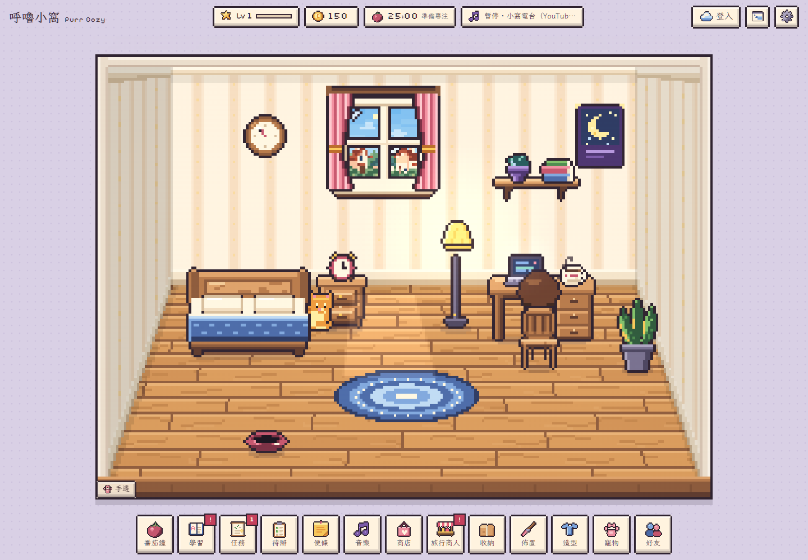
實際遊戲畫面｜像素家具、人物與寵物，共同構成你的日常風景。點擊介紹中的遊戲截圖可放大。
呼嚕小窩把專注工具、學習練習與生活模擬放在同一個空間。完成一段番茄鐘、複習幾個單字，再用獲得的資源添一盞燈、換一張地毯，或為寵物準備一頓飯。
番茄鐘陪你安排工作與休息，待辦清單收好今天要做的事，便條紙留下突然冒出的想法。讀書、工作或整理生活，都可以從一小段時間開始。
從書桌、椅子、床鋪到盆栽、燈具、牆面裝飾，逐步搭出自己的角落。換配色、搭主題，讓家具和擺設成為你累積進度的可見紀念。
角色會在房間活動，毛孩也有自己的動作與需求。專注時有人相伴，休息時可以摸摸牠、餵點零食，讓小窩多一點生活的聲音。
想讓現實和小窩靠近一點？啟用附近天氣後，遊戲可依定位取得地區天氣，將天氣變化帶進房間氛圍；也可以自行選擇地區或手動設定天氣。
經你允許後，透過瀏覽器定位取得附近地區，再查詢天氣。定位來源由裝置和瀏覽器決定；手機可以使用 GPS 等訊號，桌機也可能使用網路定位。
程式支援晴天、多雲、陰天、細雨、雨、雷雨、霧、雪與風等分類，依回報的天氣資料調整對應效果，讓窗景與房間的明暗更有氣氛。
不想開定位，就自行選擇地區或使用手動天氣。再配合環境光與燈具，白天讀書、雨夜聽歌、暖燈下發呆，都能有不同的感受。
附近天氣需要網路與定位授權；地區天氣有快取及更新間隔，不是逐秒觀測。位置與天氣快取保存在這台裝置，不必為了換天氣而開啟定位。
內建《赤方偏移》《偶有性》《不可逆》《萬華鏡》四張 EP，共 26 軌，包含 Live 與其他加收版本。選一張專輯，讓音樂陪你把一段時間好好過完。
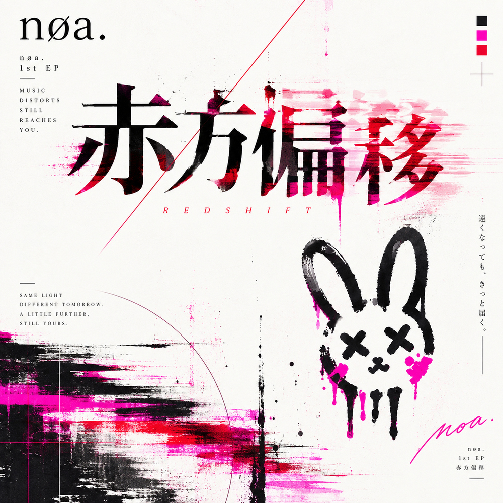
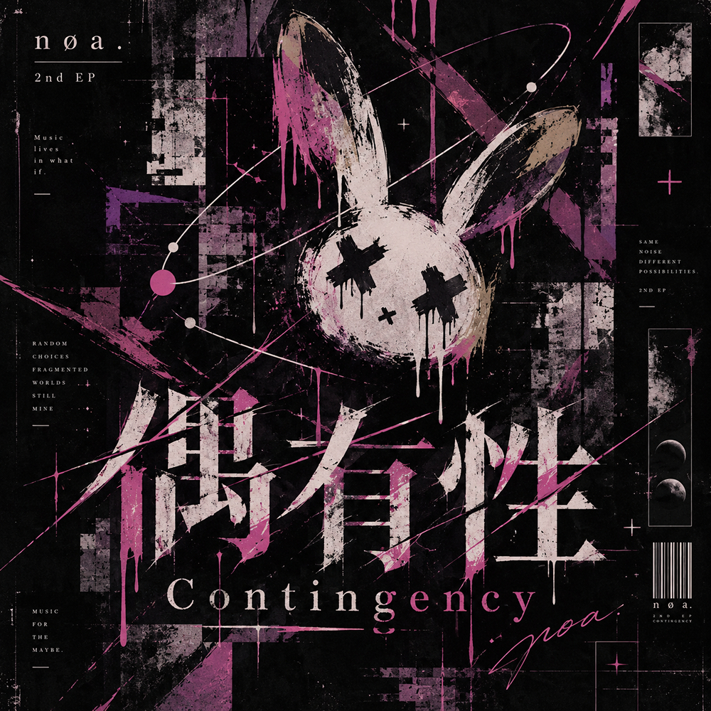
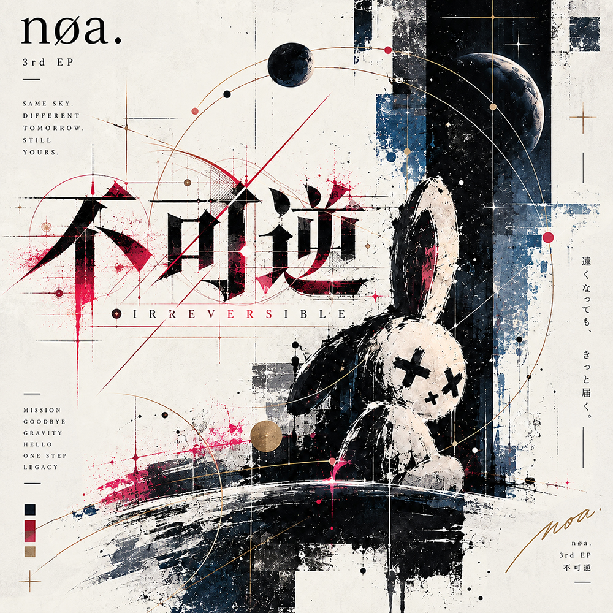
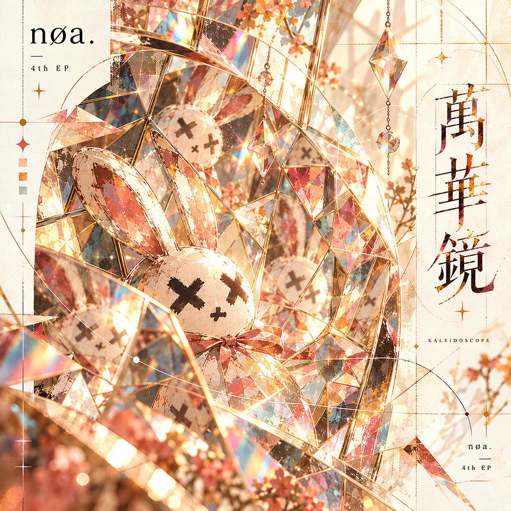
按專輯分類選歌，不必先到別處尋找播放清單。支援的歌曲封面會顯示在音樂介面，讓這個小房間也像是一間私人唱片行。
透過遊戲中的 YouTube 功能播放音樂內容，把自己習慣的聲音帶進小窩。影片能否播放取決於連線、平台及影片嵌入限制，部分播放操作也需要你先點一下。
內建音樂搭配對應的時間軸歌詞檔，隨播放進度顯示歌詞。較窄畫面下，長句會縮字，必要時緩慢捲動；歌詞同步適用已提供時間軸的歌曲，不是自動替所有 YouTube 影片產生歌詞。
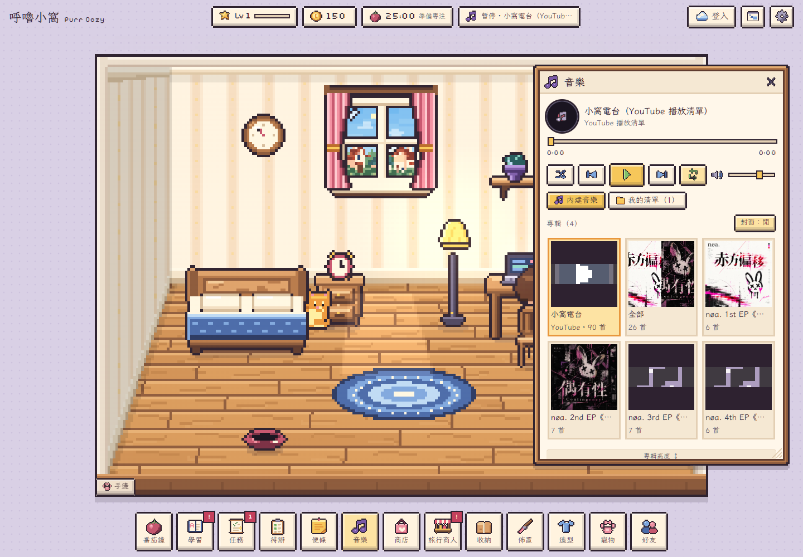
遊戲內音樂介面。上方四張封面直接取自本機提供的 EP 音檔內嵌圖片；完整曲目可展開閱讀。
英文學習是小窩生活的一部分。內建字庫分為 Level 1–6，可選擇適合自己的程度，從單字預習、每日複習走到小測驗，逐步累積熟悉度。
題型包含選擇、拼字與聽音拼字等練習；答題後的回饋幫你確認答案，也讓每天短短的一輪練習有明確的結束點。
單字預習間隔複習選擇測驗拼字練習聽音拼字複習安排會依學習紀錄延後再次出現的時間。你也可以透過學習換取寵物道具，讓「今天多記住一點」和「今天多照顧牠一點」接在一起。
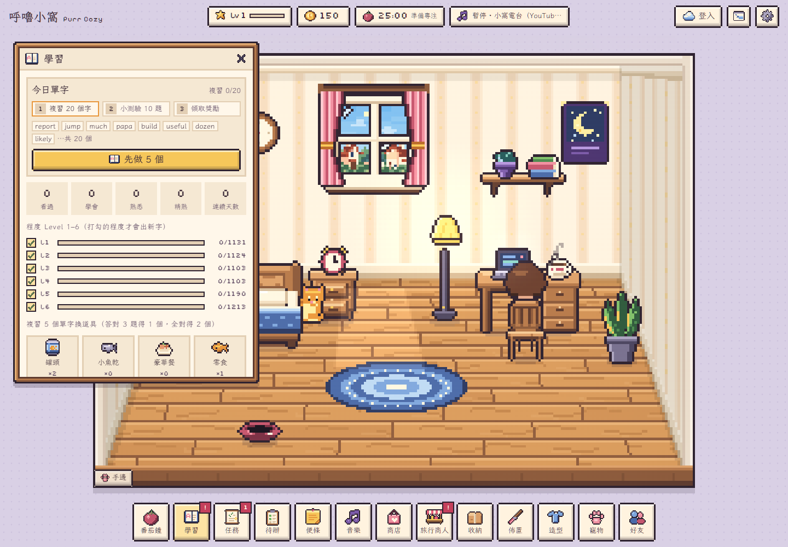
英文拼字練習，多了一隻會偷偷踩鍵盤的小橘。題目要你拼出「蘋果」，眼看就快完成，肉球卻搶先按下 X——刪掉錯字、補上正確字母，再抓準時機按 Enter。這就是 Cat’s Typo／貓咪搗蛋拼字。
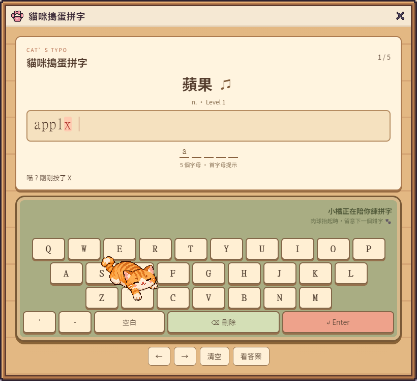
0.92.7 實際介面，以「蘋果」示範肉球插入 X 後的狀態。這是可玩的遊戲畫面，非先前的概念示意圖。
貓咪會先移到目標字母附近，再抬掌、落下；肉球對準的鍵、鍵帽回饋與插入的字母彼此一致。整隻小貓挪動，不靠伸長手臂完成動作，讓干擾看得懂，也多一點可愛。
每個英文字母都有一條底線，旁邊顯示總字母數；先提示首字母，七個字母以上再提示尾字母。空白、連字號及撇號會分開呈現，不算進字母總數，方便判斷還缺多少。
每輪五題。正確送出後保留兩秒成功回饋，接著自動進入下一題；最後一題完成後自動顯示本輪成果。選擇「看答案」則保留手動下一題，讓你有時間把單字看清楚。
appl＋ 肉球 Xapplx刪 X、補 eapple↵ Enter答對 → 2 秒後下一題桌機可以使用實體鍵盤，也能按畫面上的鍵帽。手機使用遊戲內觸控鍵盤，讓系統鍵盤不必跳出來搶空間；題目、答案、提示底線與 Enter 都在同一個練習畫面裡。
打錯字可以退格，還能左右移動游標或清空重來。退格與 Enter 不會被貓咪擅自觸發，搗蛋只會插入字母；離開玩法或切到背景時，也會停止搗蛋計時。
只有你按 Enter，才正式送出。
肉球造成的錯字不會自動交卷，也不會直接判定失敗。答錯仍能繼續修正，沒有倒數失敗的壓力。
點房間裡的書桌，選擇 Cat’s Typo；也能從「學習」頁或番茄鐘視窗的可愛小貓橫幅進入。題目沿用既有英文題庫，程度依學習頁所選的 Level 決定。
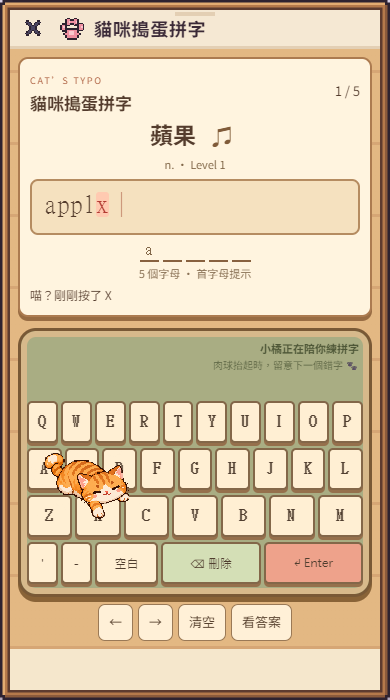
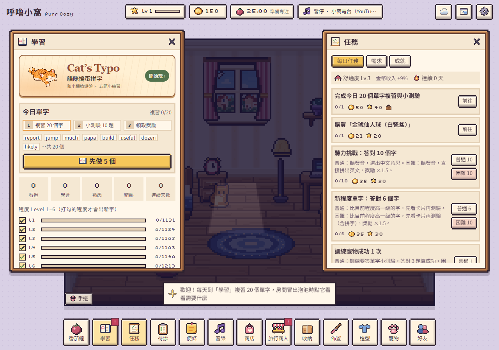
學習介面的 Cat’s Typo 入口橫幅；書桌與番茄鐘也提供入口。
目前版本使用專門製作的固定小橘插圖，尚未隨玩家寵物的毛色、性格改變。它是額外的五題練習，本輪會統計拼對、看答案及搗蛋次數；不更動原有單字熟練度，也不發放學習任務獎勵。
養育寵物、照顧需求、累積親密感，再一起學幾招。從日常餵食到正式表演，毛孩是你會想回來看看的理由。
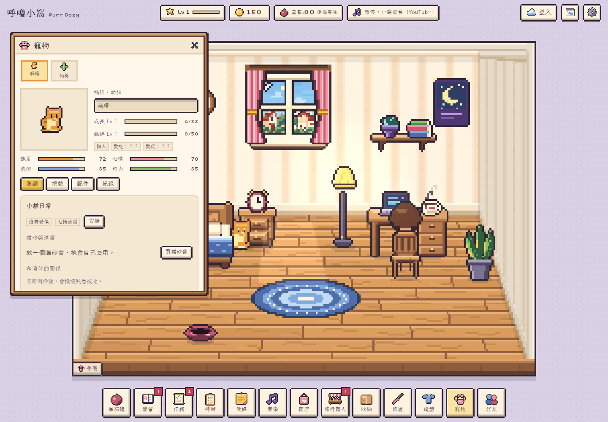
留意飢餓、心情等需求，使用飼料、罐頭、小魚乾等道具照顧牠。陪玩、梳理與互動讓養育有了節奏，而不是只把寵物放進房間就結束。
選擇手邊工具，在房間裡和寵物互動。手機觸控模式使用可見的工具提示，讓手指操作也能知道自己正在拿什麼，不必依賴滑鼠游標。
把戲有房間內的動作演出；角色也會配合伸手、鼓勵或拿起道具。當你正在專注時，寵物可以自行表演，不必把用功中的角色從桌前叫走。
把戲依寵物的訓練與解鎖情況使用。演出動作來自目前遊戲的八種把戲程式。
六位旅行商人輪流造訪，每週帶來不同主題的專屬商品。可能遇見植物商人青苔婆婆、古董商人老鐘先生，或帶著毛孩用品的毛球小姐。
每位商人販售六種專屬商品，單款每週數量有限；同時收購指定種類的收納箱家具。房間裡還擺著的家具不會直接被收走，先整理收納，再決定哪些要留下、哪些換成下一次改造的資源。
每週的輪替，讓你回小窩時有一件新鮮事可看。一般商店則提供更廣的佈置選擇，搭配折價券與收納整理，慢慢打造自己的風格。
旅行商人的專屬商品不使用折價券；一般商店的同折扣券會合併顯示數量，並標示最快到期的剩餘天數。
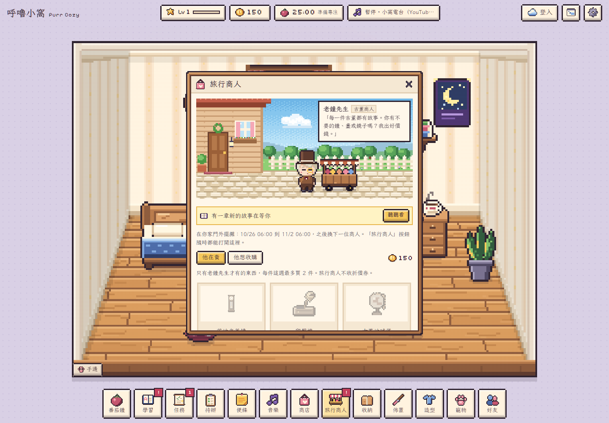
工具之外，小窩也留了一些可以慢慢探索的角落。你可以有目標地完成任務，也可以只是聽著歌，把房間重新擺一遍。
每日任務、需求與成就提供不同的小目標。專注、學習與照顧寵物的累積，會在進度和獎勵裡留下紀錄。
好友、排行與團隊功能，讓小窩之外也有連結。造訪好友房間，看看別人的佈置；多人相關功能依登入及網路狀態使用。
替角色換造型、整理收到的禮物，把喜歡的物件留在身邊。房間與角色都能逐漸變成你喜歡的樣子。
桌機適合把房間留在工作旁邊，手機則使用專門的 Mobile 介面：常用入口收在底部，商店把分類與篩選收得更精簡，讓主要空間留給商品。
英文答題介面配合可視高度調整，考慮瀏覽器上下工具列與鍵盤；文字也盡量依語意換行，讓窄螢幕上的閱讀與操作更自然。
用手機聽一首歌、做幾題單字、看看毛孩，再回到日常。不需要為了這些小事切換好幾個工具。
以瀏覽器開啟即可遊玩。定位、YouTube、雲端功能需要相應權限或網路；不同手機的瀏覽器工具列與鍵盤會影響實際可視範圍。
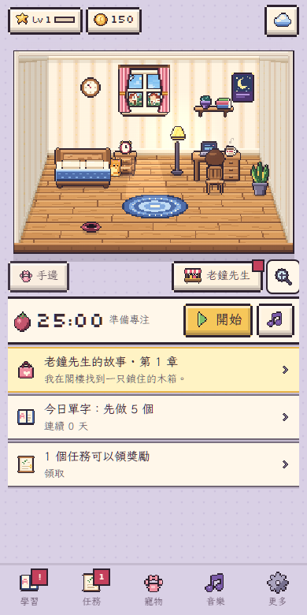
先挑一張 nøa. 專輯，或打開喜歡的 YouTube 音樂，讓房間有聲音。
設定番茄鐘，寫下一件待辦；或先複習幾個單字，不必急著把全部做完。
餵飯、摸摸頭，拿起逗貓棒；想熱鬧一點，就請寵物表演剛學會的把戲。
看看旅行商人，把新家具放進房間。今天比昨天多了一點什麼，就很好。
不用。定位用於附近天氣；你可以使用手動天氣，或選擇地區。沒有定位權限，也能使用其他遊戲功能。
不包含。同步歌詞依賴對應的時間軸歌詞檔，這份介紹中的四張內建 EP 已提供同名 LRC。YouTube 播放是另外的功能，不能視為自動取得每部影片的歌詞。
遊戲提供本機存檔與雲端同步功能。跨裝置接續需要使用相同帳號並完成雲端同步；未登入的本機進度依附目前的瀏覽器，清除網站資料可能影響它。
目前是獨立的額外練習，不更動原有單字熟練度或學習任務獎勵。貓咪插入字母不會自動交卷，玩家送錯也能繼續修正。